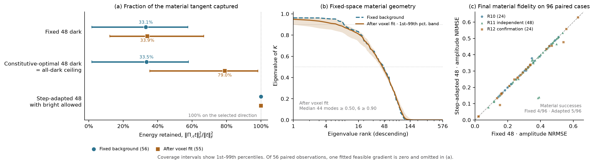
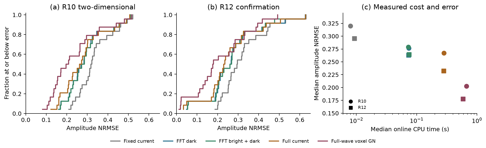
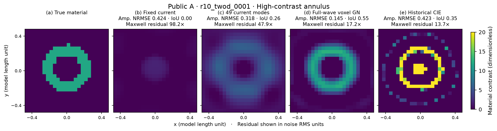
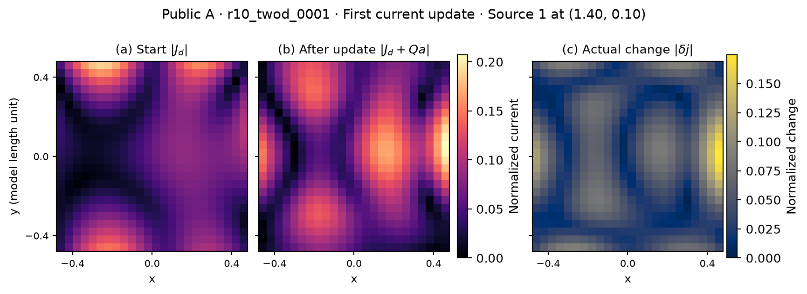
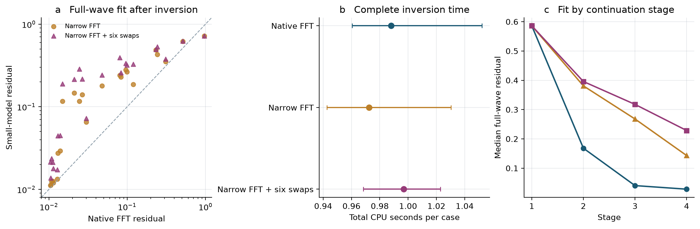
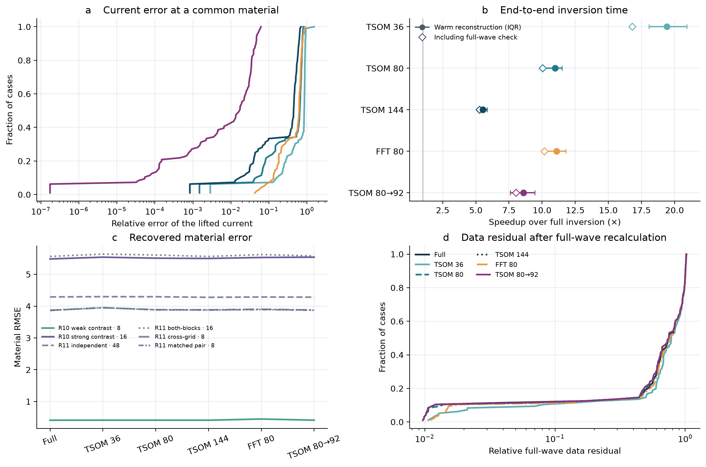

Z-ALG R16 · 2026 年 11 月 20 日
在电流域选方向，能否改善 576 格材料重建？
先在 FFT-TSOM 空间里更新多源感应电流，再独立更新材料图上的 576 个格子。一个小电流空间能容纳多少种材料变化，以及实际能恢复哪份材料，是两个问题。本轮用历史带噪读数检验两者之间的关系。
- 33.95% → 78.96%。 在体素拟合后，固定 48 阶暗电流空间保留当前下降方向约三分之一的能量。为这个方向构造的等阶暗基可达到全部暗电流的理论上限。
- 换回历史先验，固定 Fourier 交替达标 11/96。 同样允许 180 次完整正演分解，只做体素拟合达标 8/96，最优暗基达标 9/96。指定方向的精确表示并未带来最多的整图恢复。
- 跨网格 0/8。 在更细网格生成的八份旧观测上，四种方法换回历史先验并延长预算后均未达到材料评分标准。
ChatGPT 研究交接
下载研究包 ZIP
电流先对齐读数，材料再对齐电流
每份历史观测来自 12 次照明、48 个接收位置，共 576 个复读数。给定材料对比度 m，完整物理关系为
J = diag(m)(E0 + GJ)，Ypred = SJ。
先用接收矩阵的奇异模式确定一部分电流，再用投影过的二维 Fourier 模式更新其余部分。固定当前电流后，同一格中的 12 个复电流值共同约束一个实材料值。下一轮带着更新的材料回来修改电流。两步都可降低各自的辅助目标。最后要用输出材料独立重算电流和接收读数。
原 CIE 的两步公式和停止条件观测、共享算子与评分
电流空间的阶数限制了总表示能力
单频下，若每个格子至少被一个源照亮，把该格材料变化产生的多源本构增量按自身能量归一。令 Lm = I − diag(m)G，它把选定的电流空间映成可表示的本构增量空间。把归一化格子方向投影到这个 r 维空间，其实 Gram 矩阵为 K。对角元是逐格保留的能量比例，合计等于投影的维数。
tr K = r，逐格平均能量保留比例 = r / 576。
48 阶空间的逐格平均值是 8.3%。可以用旧散射读数给出的材料下降方向重新选基，把更多表示能力放到眼下要更新的方向。电流表示、完整 Maxwell 响应和恢复材料各有独立的检查。
用 56 份原始观测做方向检验。这里的暗电流指与所保留的强接收模式正交的分量。把全波材料下降方向转为多源本构增量后，在均匀背景处，固定 48 阶暗电流留下的能量中位数是 33.11%，全部接收暗方向的上限是 33.48%。体素拟合后 55 个非零方向上，这两个数变为 33.95% 和 78.96%。此时固定 Fourier 基漏掉了一部分读数较弱见的电流方向。
单个材料方向的多源本构增量只有 12 列。把它投影到暗电流经 Lm 产生的本构增量空间，再解回电流列，至多加入 12 个方向就可达到全部暗电流的理论上限。实际检验中，48 阶最优暗基与这个上限的能量比例最大绝对差为 1.23×10−15。若也允许调整强接收分量，专门构基可保留该方向 100% 的能量。
用拟合后的材料点检查未参与选基的方向。固定 48 阶基与针对当前梯度构造的 48 阶最优暗基，对随机材料方向分别保留约 8.5% 和 8.7%。只改变一个指定格点时，两者分别保留约 8.1% 和 6.4%。大幅提升的表示能量集中在用来选基的下降方向。

左图比较方向能量，中图显示 K 的谱。右图配对比较主表的 48 阶共享实体素投影与 36 阶基加入物理切线方向的两臂，材料达标为 4/96 和 5/96。点击可查看论文图 PDF。
完整推导与适用条件逐方向能量
主实验的材料恢复与完整正演
主样本是 R10 的 24 份、R11 的 48 份与 R12 的 24 份同网格原始仿真观测，共 96 份不同材料。每臂最多 60 次完整正演分解。伴随求解和电流更新另计，因此相同分解上限下各臂实际用时可以不同。
幅度 NRMSE、固定支撑 IoU 和 CPU 秒均为中位数。材料达标要求盒内合法、幅度 NRMSE ≤0.15 且 IoU ≥0.7。固定 Fourier 交替得到最高 IoU 中位数。按更新电流估计材料读数得到最低幅度 NRMSE 中位数，材料达标为 6/96。最优暗方向能容纳指定方向的更多能量，材料达标为 5/96。细网格生成、粗网格反演的另八个 R11 原观测上，各电流对照均未达到材料评分标准。结论对应本轮短预算和这些离散仿真。
输出材料独立重做全波后的相对数据残差中位数，只做体素拟合为 77.70%，固定 Fourier 交替为 65.46%，用更新电流估计材料读数为 66.64%。幅度 NRMSE 最低的方法，其数据残差中位数仍高于固定 Fourier 交替。
完整中文报告实验设置、未成功案例与费用分组统计逐例材料、残差与费用交替求解代码
把完整正演分解上限延长到 180 次
在同一 96 份材料上，把四组方法的完整正演分解上限从 60 提高到 180。固定 Fourier 交替达标数由 6 增到 7，最优暗基保持 5 例。不同方法的伴随和电流步影响实际总时间。
八份跨网格观测中，四种方法均为 0/8。指定方向在电流空间表示得更好，依然需要经过非线性材料更新和全波比较才可能改善最终图像。
180 次上限的分组统计延长预算的逐案证据与费用
换回历史先验与目标尺度
上面两张表使用本轮的光滑邻差和弱背景先验。对同一 96 份材料，再把所有四臂一起换成 MAX-STRUCT 的历史差分与平滑 TV 先验，并沿用历史优化器的目标数值尺度。完整正演分解上限分为 60 次和 180 次。
每组分母为 96，误差与耗时列出中位数。在 180 次上限，固定 Fourier 交替比全波体素拟合多达标三案，单例 CPU 中位数接近。两种更复杂的路线各达标 9 案。八个跨网格对象仍无一达标。
历史尺度，60 次逐案历史尺度，180 次逐案
普通二次交替很快，物理误差仍高于噪声
在 R10 和 R12 各 24 个旧二维仿真材料上，先把接收强模式所确定的电流固定，再用 49 个 Fourier 系数补上暗电流。与固定全部电流的控制相比，这一步降低了 R10 的 22/24 例和 R12 的 23/24 例材料误差。每例的在线 CPU 中位数都是 0.074 秒。
均为组内中位数。相对 L² 用真实材料范数归一。49 阶电流臂的输出材料重新做完整正演后，残差中位数是噪声 RMS 的 48.35 倍和 60.82 倍，两组均无一例达到 99% 噪声球。把 49 阶电流增到 121 阶能让部分旧难例更接近读数。高对比桥案的材料误差同时升高。

论文图使用 MAX-STRUCT 的幅度 NRMSE，等于 RMSE 除以真值最大对比度减 0.1。
查看高对比环的材料图与第一轮电流
在历史 0001 的源 1 上，第一轮 FFT 暗电流更新的范数是原接收确定电流的 80.56%，引起的接收变化只有该源噪声 RMS 的 0.465 倍。更新幅度大的一部分电流，接收器几乎看不见。

图中标注幅度 NRMSE 和固定支撑 IoU。上方表格中的材料相对 L² 用真值 L² 范数归一。

第一轮固定均匀材料。电流单位沿用原标量 TM 模型。
替代交替的完整对照逐组统计论文图 PDF
成熟 CIE 也有不同类型的失败
历史强 CIE 同样交替更新感应电流和全部材料像素。电流用 Fourier 投影后的共轭梯度更新，材料步改用有理变换，末尾再按同一个原 Maxwell 目标做完整材料校正。在 R10 主 24 案，历史 CIE-single 恢复 11 案，Dual-CIE 恢复 10 案。环 0001 和包覆包体 0016 连数据也没拟合好。另 11 案中，输出材料和真值都在同一观测的噪声球中，材料评分依然未合格。
MAX-STRUCT R3 的旧弯条有独立收发几何。保存的 CIE 终点用当时的评分定义得到 NRMSE 0.510695 和 Otsu IoU 0.245902。该组的 NRMSE 分母为 12，支撑取预测的 Otsu 阈值。R10–R12 用真值幅度归一和 m>1 的固定支撑。
查看同一原生 CIE 求解器的频带对照
R10 的 24 例均执行 200 次电流与全体素交替。把末段 Fourier 坐标从 576 个减到 144 个，完整 CPU 总时只下降 3.2%，原全波相对残差中位数从 2.84% 升至 14.32%。在同样的窄频维数中，用六个当时的梯度方向换掉六个暗模，残差进一步升至 22.87%。两个纯 Fourier 臂保留同样数量的 Green FFT 和全图材料更新。
保留原 144 个 Fourier 模并新增六个方向时，加六个 Fourier 模与加六个残差方向的残差中位数分别是 12.79% 和 13.32%。这些对照区分了删去原 Fourier 模的影响和新方向带来的增益。

三组用同一观测、物理算子和短迭代预算。等维换模捕获了强梯度方向，末端材料 RMSE 在 21/24 例上升。
完整原生短预算实验逐例结果与归档参照
真实实现、停止条件与失败细节864 条历史基线离线形状标签
用两频读数时，全波拟合的材料误差下降，49 阶交替的误差上升
沿用 R15 的八个原缺陷和空板。每份几何都有无损与已知 Debye 两种带噪观测，由 48×48 网格生成。反演始终用 24×24 网格上的共用 576 个材料格。三个分配共用总发射能量，各发 8 次、每次 8 收，共 64 条复读数。49 阶交替法在每个频率独立更新电流，再用全部频率更新同一张材料图。
表中是八个非空对象的材料 RMSE 中位数。49 阶交替的带符号支撑 IoU 中位数，在 16 GHz 为 0.594 和 0.590，两个宽带分配均降至 0。全波 GN 用这些同样的宽带读数取得更准确的介电图，说明本组当前两步实现的表现取决于它怎样把宽带电流信息送回材料步。
拉平各频本构权重后，两个宽带分配仍未形成超过阈值的支撑。保持每频 49 维，把部分暗方向换成可调整的接收强方向，两种宽带设计和两种宿主的 32 次非空配置评估中，完整物理残差均增大，均无超过阈值的支撑。32 次评估重复使用同一批八个缺陷。 接收强方向的开关对照
宽带设置、现象与费用宽带汇总逐案材料与空板R15 原宽带报告
固定材料，用低阶电流近似加速传播求解
另一个对照在固定材料时直接解电流方程，用 80 阶状态近似代替 576 阶稠密方程。它在 96 个历史样本上的热启动时间中位数从 0.436 秒降至 0.043 秒，逐例加速中位数为 10.98 倍。两者的材料 RMSE 中位数都约为 4.39。每个材料点的状态近似能有效加速求解，这批强对比对象仍经常恢复失败。

每种方法都有独立完整正演校验。这里的读数和计时口径沿用这项对照的实验合同。
状态消去的公式与分组结果原始机器统计论文图 PDF